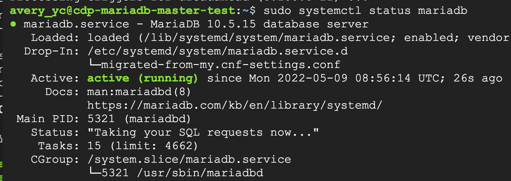
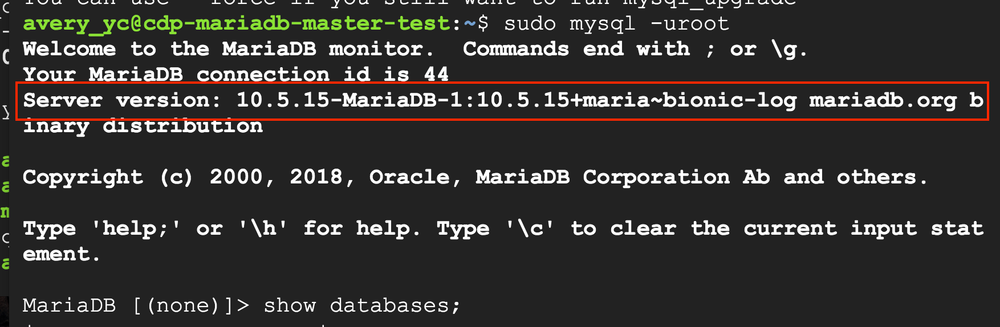
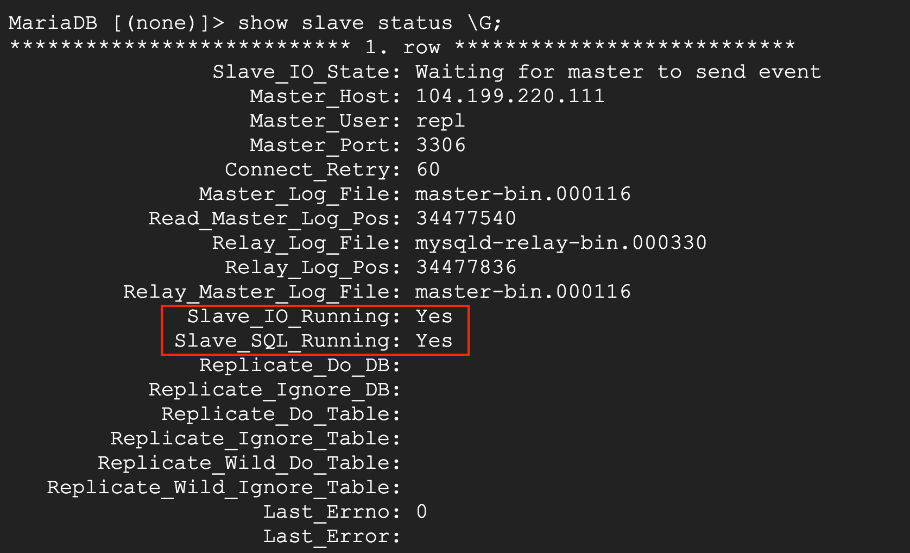
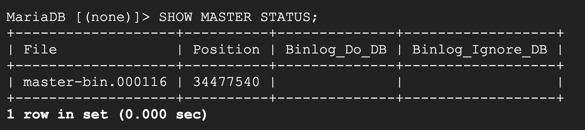

前言
要用到 DATA TYPE JSON 時發現目前 mariaDB 版本不足，原本 10.1.48，
要到 10.2.3 才可以儲存 JSON 資料型態，快速記錄一下如何升級。
正文
資料庫備份＆重新下載 mariaDB
1
2
3
4
5
6
7
8
9
10
11
12
13
14
15
16
17
18
19
20
21
22
23
24
25
26
27
|
儲存備份的資料
#sudo mariabackup --backup -u<username> -p<password> --target-dir=/path/to/save/backup
$ sudo mariabackup --backup -uroot -proot --target-dir=/home/avery_yc/backup/
要恢復備份 要先準備它 (XD)
$ sudo mariabackup --prepare --target-dir=/home/avery_yc/backup/
停止原本在運作的mariadb
$ sudo systemctl stop mariadb
刪除原本的mariadb
$ sudo apt-get remove mariadb-server
重新下載mariadb，指定版本10.5
$ sudo apt install wget
$ wget https://downloads.mariadb.com/MariaDB/mariadb_repo_setup
$ chmod +x mariadb_repo_setup
$ sudo ./mariadb_repo_setup --mariadb-server-version="mariadb-10.5"
$ sudo apt update
$ sudo apt install mariadb-server mariadb-backup
$ sudo mariadb-upgrade
此時查看mariadb狀態已經是啟動的了 ⇒ $ sudo systemctl status mariadb
如果還沒啟動執行 => $ sudo systemctl start mariadb
|

成功升級成 10.5 了

我先升級 slave 再 master
都是一樣的步驟，升級成功之後也檢查是否還有 slave & master 的關係。
檢查
show slave status \G
slave GOOD

show master status
master GOOD

心得
其實實作起來蠻快的，但在升級前還是要有一顆大膽的心，因為是已經在運作的 database，所以操作時小心翼翼，還好 survey 後一次就成功了，熱騰騰的記錄下來。
資料來源
How to Upgrade MariaDB in Ubuntu 18.04 LTS
[MySQL] Mysqldump 備份&還原資料庫 – 指令範例
sudo mysqldump : Permission denied
查詢已安裝的 MySQL / MariaDB 版本
Author:
Chi Lin
Permalink:
https://chiderlin.github.io/2022/05/09/mariadb-version-upgrade/
License:
Copyright (c) 2019 CC-BY-NC-4.0 LICENSE
Slogan:
Do you believe in DESTINY?